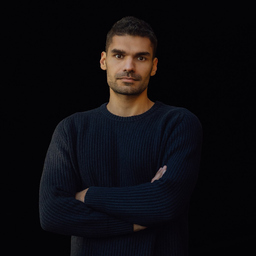

I work with ambitious people who look successful from the outside but feel something is fundamentally off. Together we uncover what is actually standing in your way, and start building a life that fits who you really are.
Most people mistake that feeling for a lack of discipline. It rarely is.
A short, private self-reflection. No pitch, just a clear look at where you actually are.
From the outside, your life looks like it is working.
And yet something feels quietly, persistently off: a sense that you are living a version of yourself you were handed, not the one you actually are.
So you play smaller than you know you are, and call it being realistic.

I spent the better part of a decade mistaking the life I was told to want for the life I actually wanted. It cost me years I did not need to lose.
My work now is one thing: helping clear-minded, ambitious people stop performing a borrowed self, and build a life around the one underneath it.
I am a thinker before I am a coach. If you want theory you can actually live, you are in the right place.
I take on a small number of people, one to one, over months rather than weeks. The work is direct, private, and demanding.
If you are looking for someone to coddle, motivate, or tell you what you want to hear, I am almost certainly not the person for you.